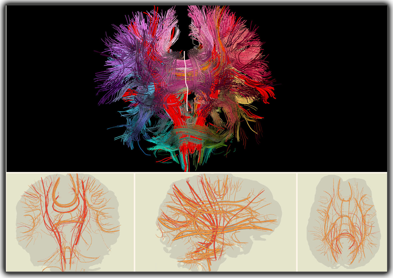

|
We introduce two-dimensional neural maps for exploring connectivity in the brain. Planar neural maps consist of stylized 2D projections of white matter bundles in the brain and combine desirable properties of low-dimensional representations, such as visual clarity and ease of tract-of-interest selection, with the anatomical familiarity of 3D brain models and planar sectional views. Three planar representations, along the coronal, transverse and sagittal planes (bottom panels), are linked to a 3D stream-tube model (top). Selections in the projection views can be performed by clicking or cutting across 2D cluster curves and are mirrored in the 3D view. |